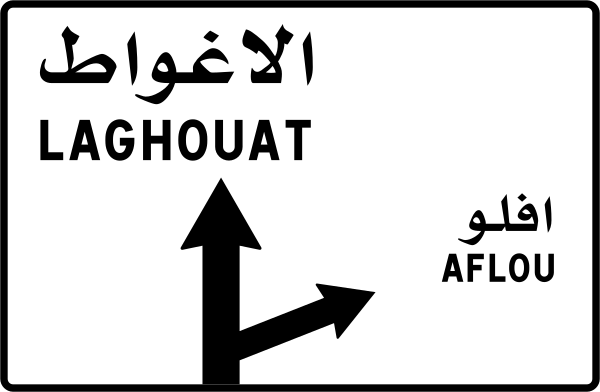

تعرّف
ابدأ بشكل الإشارة ولونها وما الذي تنبهك إليه أو تلزمك به.
تعلّم بوضوح، قد بثقة
اكتشف تصنيفات الإشارات، راجع قواعد الطريق، ثم اختبر معلوماتك في اختبارات قصيرة مخصصة لكل فئة.

ابدأ من الفئة
لكل فئة صفحة مستقلة، وصور واضحة، ونقاط عملية تساعدك على ربط الإشارة بالتصرف الصحيح.

تنبهك إلى خطر أو تغير محتمل في الطريق حتى تعدّل سرعتك وسلوكك قبل الوصول إليه.
3 إشارات تدريبية ←
توضح ما لا يُسمح به على الطريق مثل الدخول المخالف أو تجاوز الحد الأقصى للسرعة.
3 إشارات تدريبية ←
تحدد اتجاهاً أو سلوكاً يجب اتباعه، مثل اختيار مسار أو اتجاه محدد عند التقاطع.
3 إشارات تدريبية ←
تساعدك على الوصول إلى الوجهات والخدمات واختيار المسار بهدوء قبل المفترق.
2 إشارتان تدريبيتان ←ابدأ بشكل الإشارة ولونها وما الذي تنبهك إليه أو تلزمك به.
راجع السلوك الآمن المرتبط بكل علامة بدل حفظ شكلها فقط.
أجب عن أسئلة قصيرة تظهر لك التفسير فوراً بعد الاختيار.
ارجع إلى الصفحة المناسبة عند الحاجة قبل موعد التدريب أو الامتحان.